경비지도사-1차(법학개론,민간경비론) (2021-11-06 기출문제)
1과목: 법학개론
1. ( )에 들어갈 것으로 옳은 것은?
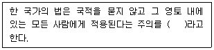
- 속지주의
- 보호주의
- 세계주의
- 속인주의
(정답률: 64%)
2. 법원(法源)에 관한 설명으로 옳지 않은 것은?
- 관습법은 관습이 법적 확신을 얻어 규범화된 것이다.
- 조리는 사물의 이치나 본성을 뜻하는 불문법이다.
- 규칙은 지방의회에서 제정하는 자치법규이다.
- 명령은 행정기관에 의해 제정된 성문법이다.
(정답률: 34%)

3. 법의 분류에 관한 설명으로 옳지 않은 것은?
- 형사소송법은 공법이며 절차법이다.
- 민법은 사법이며 실체법이다.
- 민법은 상법에 대한 특별법이다.
- 형법은 공법이며 실체법이다.
(정답률: 55%)
4. 대륙법계의 특징으로 옳지 않은 것은?
- 제정법에 대한 판례법의 우위
- 독일법계와 프랑스법계 중심
- 성문법 중심
- 일반적ㆍ추상적 규범으로 체계화
(정답률: 29%)
5. 법의 적용에 관한 설명으로 옳지 않은 것은?
- 법의 적용은 구체적인 사안을 법규범에 적용하는 것을 말한다.
- 법의 적용은 구체적 사안을 상위개념(대전제)으로 하고, 추상적인 법규범을 하위개념(소전제)으로 하여 결론을 도출하는 것이다.
- 법의 적용을 위해서는 우선 법이 적용되어야 할 구체적 사실을 확정해야 한다.
- 국가생활에서 궁극적인 법의 적용은 재판에 의해서 실현된다고 할 수 있다.
(정답률: 20%)
6. 신분권에 관한 설명으로 옳지 않은 것은?
- 일신전속적 권리에 속한다.
- 거래의 객체가 될 수 없다.
- 동거청구권, 부양청구권 등이 이에 속한다.
- 사단법인에 소속된 구성원으로서의 지위에 기하여 발생하는 권리이다.
(정답률: 15%)
7. 법의 해석방법 가운데 물론해석에 해당되는 것은?
- '소멸시효의 이익은 미리 포기하지 못한다'는 규정이 있는 경우, 시효완성 후의 포기는 허용된다고 해석하는 것
- '자전거 통행금지'라는 게시판이 있는 경우, 오토바이도 통행하지 못한다고 해석하는 것
- '배우자'의 개념에 대해서, 법률상 배우자뿐만 아니라 사실상 배우자를 포함한다고 해석하는 것
- '미성년자가 혼인을 할 때에는 부모의 동의를 얻어야 한다'는 규정이 있는 경우, 성년자가 혼인을 할 때에는 부모의 동의를 필요로 하지 않는다고 해석하는 것
(정답률: 28%)
8. 헌법에 규정되어 있는 의무가 아닌 것은?
- 타인의 권리 존중의무
- 근로의 의무
- 재산권 행사의 공공복리적합의무
- 환경보전의무
(정답률: 19%)
9. 권리와 구별되는 개념에 관한 설명으로 옳은 것은?
- 권원은 권리의 내용을 이루는 개개의 법률상 작용을 말한다.
- 권능은 일정한 법률상 또는 사실상의 행위를 하는 것을 정당화하는 법률상의 원인이다.
- 권한은 타인을 위하여 그 자에게 일정한 법률효과를 발생하게 하는 행위를 할 수 있는 법률상 자격이다.
- 반사적 이익은 법에 의해 보호되는 이익으로서 그것이 침해된 자도 법률상 구제를 받을 수 있음이 원칙이다.
(정답률: 41%)
10. 헌법 제37조 제2항의 규정이다. ( )에 들어갈 것은?
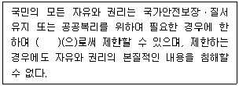
- 헌법
- 법률
- 대통령령
- 부령
(정답률: 23%)
11. 국민의 근로와 관련하여 헌법에 명시되어 있지 않은 것은?
- 연소자는 우선적으로 근로의 기회를 부여받는다.
- 국가는 법률이 정하는 바에 의하여 최저임금제를 시행하여야 한다.
- 공무원인 근로자는 법률이 정하는 자에 한하여 단결권ㆍ단체교섭권 및 단체행동권을 가진다.
- 법률이 정하는 주요방위산업체에 종사하는 근로자의 단체행동권은 법률이 정하는 바에 의하여 이를 제한하거나 인정하지 아니할 수 있다.
(정답률: 19%)
12. 헌법상 법원 및 법관에 관한 규정의 내용으로 옳은 것은?
- 법률의 위헌 여부는 대법원이 이를 최종적으로 심사할 권한을 가진다.
- 법원은 명령ㆍ규칙의 위헌 여부에 대하여 헌법재판소에 제청하고 그 심판에 의하여 재판한다.
- 대법원장과 대법관이 아닌 법관은 국회의 동의를 얻어 대통령이 임명한다.
- 법관은 탄핵 또는 금고 이상의 형의 선고에 의하지 아니하고는 파면되지 아니한다.
(정답률: 10%)
13. 헌법상 '국가안전보장회의'의 주재자는?
- 대통령
- 국방부장관
- 국가정보원장
- 행정안전부장관
(정답률: 34%)
14. 민법상 법인에 관한 설명으로 옳지 않은 것은?
- 법인은 법률의 규정에 의함이 아니면 성립하지 못한다.
- 영리아닌 사업을 목적으로 하는 사단은 주무관청의 허가를 얻어 이를 법인으로 할 수있다.
- 법인은 그 주된 사무소의 소재지에서 설립등기를 함으로써 성립한다.
- 법인의 대표자가 그 직무에 관하여 타인에게 가한 손해에 대해 법인은 배상할 책임이 없다.
(정답률: 32%)
15. 민법상 기한의 이익에 관한 설명으로 옳은 것은?
- 무상임치의 경우 채무자만이 기한의 이익을 가진다.
- 기한의 이익을 가지는 자는 그 이익을 포기할 수 없다.
- 채무자가 담보제공의 의무를 이행하지 아니하는 때에는 기한의 이익을 상실한다.
- 당사자 사이에 체결한 기한이익의 상실에 관한 특약은 효력이 없다.
(정답률: 15%)
16. 민법상 담보물권이 아닌 것은?
- 지상권
- 유치권
- 질권
- 저당권
(정답률: 15%)
17. 경비업무를 도급하는 내용으로 경비계약을 체결하는 경우 그 계약의 법적 성질로 옳지 않은 것은?
- 낙성계약
- 쌍무계약
- 무상계약
- 불요식계약
(정답률: 15%)
18. 경비업자 甲이 고용한 경비원 乙이 근무 중 과실로 타인에게 손해를 끼쳤다. 이때 甲이 지는 책임에 관한 설명으로 옳지 않은 것은?
- 乙이 업무집행에 관하여 타인에게 손해를 끼친 경우 甲은 피해자에게 손해배상의무를 진다.
- 甲에게 배상책임을 지게 하는 취지는 피용자의 자력부족 때문에 피해자가 충분한 구제를 받을 수 없게 되는 상황을 방지하기 위함이다.
- 甲과 乙사이에 유효한 고용계약이 체결되지 않았더라도 실질적으로 사용관계가 있으면 甲은 배상책임을 진다.
- 만약 乙이 일시적으로만 업무를 수행하였다면 甲은 배상책임을 지지 아니한다.
(정답률: 34%)
19. 甲과 乙은 丙의 귀금속 상점에 침입하여 재물을 절도하였다. 이에 관한 설명으로 옳지 않은 것은?
- 甲과 乙은 丙의 손해에 대해 연대하여 배상할 책임이 있다.
- 甲과 乙은 丙의 손해에 대해 공동불법행위자로서의 책임을 진다.
- 甲과 乙의 손해배상 범위는 원칙적으로 상당인과관계에 있는 모든 손해이다.
- 甲과 乙의 절도행위를 丁이 교사(敎唆)한 경우에 丁은 甲ㆍ乙과 연대책임을 지지 않는다.
(정답률: 41%)
20. 甲은 경비업자 乙과 경비계약을 체결하였다. 그런데 그 경비계약의 내용을 乙이 제대로 이행하지 않아 甲에게 손해가 발생하였다면, 乙에 대한 甲의 손해배상청구권이 발생하기 위한 요건에 해당하지 않는 것은?
- 乙의 작위 또는 부작위
- 甲의 손해
- 乙의 행위와 甲의 손해 사이의 인과관계
- 甲의 책임능력
(정답률: 39%)
21. 형법상 甲의 행위는?
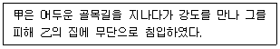
- 정당방위
- 자구행위
- 긴급피난
- 정당행위
(정답률: 37%)
22. 형법상 재산범죄에 관한 설명으로 옳지 않은 것은?
- 친족상도례는 모든 재산범죄에 적용된다.
- 절도죄는 타인의 재물을 절취함으로써 성립한다.
- 강도죄는 예비ㆍ음모한 자에 대한 처벌규정이 있다.
- 준강도는 목적범이며, 행위주체는 절도범이다.
(정답률: 41%)
23. 형사소송법상 신속한 재판을 위한 제도로 옳지 않은 것은?
- 궐석재판
- 집중심리
- 불필요한 변론의 제한
- 피고인의 진술거부권
(정답률: 15%)
24. 형사소송법상 변호인에 관한 설명으로 옳지 않은 것은?
- 변호인은 원칙적으로 변호사 중에서 선임하여야 한다.
- 변호인선임은 당해 심급에 한하여 효력이 있다.
- 피고인 또는 피의자는 변호인을 선임할 수 있다.
- 공소제기 전에 선임된 변호인은 제1심의 변호인이 될 수 없다.
(정답률: 24%)
25. ( )에 들어갈 말로 옳은 것은?
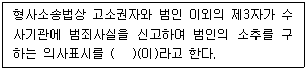
- 고발
- 고소
- 자수
- 자백
(정답률: 41%)
26. 형사소송법상 증거에 관한 설명으로 옳지 않은 것은?
- 공소범죄사실에 대한 거증책임은 원칙적으로 검사에게 있다.
- 피고인의 자백이 그 피고인에게 불이익한 유일의 증거인 경우 이를 유죄의 증거로 한다.
- 증거란 사실 인정의 근거가 되는 자료이다.
- 적법절차에 따르지 아니하고 수집한 자료는 증거로 할 수 없다.
(정답률: 15%)
27. 형사소송법상 제1심 판결에 불복하여 제2심 법원에 제기하는 상소는?
- 항고
- 상고
- 항소
- 재심
(정답률: 43%)
28. 상법상 주식회사의 기관이 아닌 것은?
- 주주총회
- 지배인
- 대표이사
- 이사회
(정답률: 29%)
29. 상법상 회사의 종류가 아닌 것은?
- 유한회사
- 유한책임회사
- 합자회사
- 조합회사
(정답률: 34%)
30. 상법상 손해보험의 종류가 아닌 것은?
- 생명보험
- 보증보험
- 해상보험
- 책임보험
(정답률: 24%)
31. 상법상 보험계약 체결시 약관의 설명의무에 관한 내용이다. ( )에 들어갈 것을 순서대로 나열한 것은?
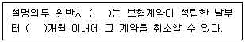
- 보험계약자, 1
- 보험계약자, 3
- 보험자, 1
- 보험자, 3
(정답률: 29%)
32. 근로기준법상 해고에 관한 내용이다. ( )에 공통적으로 들어갈 숫자는?
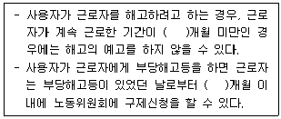
- 1
- 2
- 3
- 4
(정답률: 23%)
33. 산업재해보상보험법상 보험급여의 종류가 아닌 것은?
- 요양급여
- 휴업급여
- 생계급여
- 직업재활급여
(정답률: 15%)
34. 사회보험에 관한 설명으로 옳은 것은?
- 사회보험에 따른 비용은 국가가 그 전부를 부담하는 것이 원칙이다.
- 사회보험 및 사보험은 임의가입이 원칙이다.
- 우리나라는 특수직역 종사자를 모두 포괄한 국민 단일 연금체계로 운영하여 사회통합에 기여하고 있다.
- 「국민연금법」상 수급권은 이를 압류하거나 담보로 제공할 수 없다.
(정답률: 15%)
35. 사회보장기본법상 사회보장수급권에 관한 설명으로 옳지 않은 것은?
- 사회보장수급권은 관계 법령에서 정하는 바에 따라 사회보장급여를 받을 권리를 의미한다.
- 사회보장수급권은 포기할 수 없다.
- 사회보장수급권은 관계 법령에서 정하는 바에 따라 다른 사람에게 양도할 수 없다.
- 사회보장수급권이 제한되거나 정지되는 경우에는 제한 또는 정지하는 목적에 필요한 최소한의 범위에 그쳐야 한다.
(정답률: 15%)
36. 행정청이 법률의 근거가 없음에도 불구하고 상대방에게 영업취소 처분을 하였다면 어떤 원칙에 위배되는가?
- 비례의 원칙
- 법률유보의 원칙
- 법률우위의 원칙
- 신뢰보호의 원칙
(정답률: 20%)
37. 행정청이 어떠한 처분을 하기 전에 당사자등의 의견을 직접 듣고 증거를 조사하는 절차는?
- 청문
- 사전통지
- 의견제출
- 행정조사
(정답률: 19%)
38. 행정청이 영업허가를 하면서 “허가기간은 2021년 12월 31일까지”라고 부관을 붙인 경우, 그 부관의 종류는?
- 시기
- 종기
- 부담
- 정지조건
(정답률: 15%)
39. 행정상 사실행위에 해당하는 것은?
- 건축허가
- 도로포장
- 운전면허
- 허가취소
(정답률: 15%)
40. ( )에 들어갈 것으로 옳은 것은?
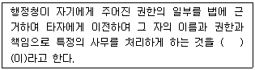
- 대결
- 위임전결
- 권한의 대리
- 권한의 위임
(정답률: 14%)
2과목: 민간경비론
41. 경비업무 중 '경비를 필요로 하는 시설 및 장소에서의 도난ㆍ 화재 그 밖의 혼잡 등으로 인한 위험발생 방지 업무'에 해당하는 것은?
- 호송경비업무
- 시설경비업무
- 특수경비업무
- 기계경비업무
(정답률: 34%)
42. 민간경비의 주요임무로 옳지 않은 것은?
- 질서유지활동
- 범죄수사활동
- 위험방지활동
- 범죄예방활동
(정답률: 46%)
43. 민간경비의 실질적 개념에 관한 설명으로 옳지 않은 것은?
- 경비업법에 의하여 허가받은 법인이 경비업법상 규정된 업무를 수행하는 경비활동이다.
- 민간경비 뿐만 아니라 지역 내 자율방범대 및 개인적 차원 등에서 이루어지는 범죄예방관련 제반활동이다.
- 민간차원에서 수행하는 개인 및 집단의 생명과 신체에 대한 위해방지, 재산보호 등과 관련된 활동이다.
- 정보보호, 사이버보안은 실질적 개념의 민간경비에 속한다.
(정답률: 5%)
44. 민간경비와 공경비의 차이점에 관한 설명으로 옳지 않은 것은?
- 민간경비의 주체는 민간기업이고, 공경비의 주체는 정부이다.
- 민간경비는 고객지향적 서비스이고, 공경비는 시민지향적 서비스이다.
- 민간경비의 목적은 고객의 범죄예방 및 손실보호이고, 공경비의 목적은 국민의 안녕과 질서유지이다.
- 민간경비의 임무는 범죄예방이고, 공경비의 임무는 범죄대응에 국한된다.
(정답률: 34%)
45. 공동화이론에 관한 설명으로 옳지 않은 것은?
- 경찰이 수행하는 경찰 본연의 기능ㆍ역할을 민간경비가 보완한다.
- 경찰은 거시적 질서유지 기능을 하고 개인의 신체와 재산보호는 개인 비용으로 부담해야 한다.
- 민간경비와 공경비의 관계는 상호갈등ㆍ경쟁관계가 아니라, 상호보완적ㆍ역할분담적 관계를 갖는다.
- 범죄증가에 비례해 경찰력이 증가해야 하지만, 현실적으로 어려워 그 공백을 메우기 위해 민간경비가 발전한다.
(정답률: 29%)
46. 민영화이론에 관한 설명으로 옳은 것은?
- 복지국가 확장의 부작용에 따른 재정위기를 극복하기 위해 국가의 역할 범위를 축소 하고 재정립한다.
- 그냥 내버려두면 보호받지 못한 채로 방치될 만한 재산을 민간경비가 보호한다.
- 경기침체에 따른 실업자의 증가로 범죄가 증가함으로써 민간경비 시장이 성장ㆍ발전 한다.
- 경찰의 치안서비스 제공 과정에서 시민과 민간경비의 능동적 참여를 다각적으로 유도한다.
(정답률: 20%)
47. 일본의 민간경비 발전과정에 관한 설명으로 옳지 않은 것은?
- 1960년대에 한국과 중국으로 진출하면서 비약적인 발전을 하였다.
- 1964년 동경올림픽 선수촌 경비를 계기로 민간경비의 역할이 널리 인식되었다.
- 1970년 오사카 만국박람회(EXPO) 개최시 민간경비가 투입되었다.
- 경비업법 제정 당시 신고제로 운영하였으나, 그 후 허가제로 바뀌었다.
(정답률: 20%)
48. 한국 민간경비의 역사적 발전과정에 관한 설명으로 옳지 않은 것은?
- 1977년 설립된 한국경비실업은 경비업 허가 제1호를 취득하였다.
- 1989년 용역경비업법은 용역경비업자가 대통령령으로 정하는 기계경비시설을 설치ㆍ폐지ㆍ변경한 경우 허가관청에 신고하여야 한다고 규정하였다.
- 2001년 경비업법이 전면 개정되면서 경비업의 종류에 신변보호업무가 추가되었다.
- 2013년 경비업법 개정으로 집단민원현장에 배치된 경비원의 지도ㆍ감독 규정이 강화 되었다.
(정답률: 20%)
49. 미국의 민간경비산업에 관한 설명으로 옳지 않은 것은?
- 현재 계약경비업체가 자체경비업체보다 비약적인 발전을 보이고 있다.
- 경찰과 민간경비는 업무수행에 있어 상명하복의 관계가 명확하다.
- 제2차 세계대전 이후 민간경비산업이 급속히 발전하였다.
- 2001년 9.11테러 이후 국토안보부를 설치하였으며, 이는 공항경비 등 민간경비산업이 발전하는 중요한 계기가 되었다.
(정답률: 15%)
50. 순수공공재 이론에서 “치안서비스라는 재화는 이용 또는 접근에 대해서 제한할 수 없다”는 내용에 해당하는 것은?
- 비경합성
- 비배제성
- 비거부성
- 비순수성
(정답률: 24%)
51. 일본 민간경비원의 법적 지위에 관한 설명으로 옳은 것은?
- 민간인 지위 이상의 특권이나 권한을 부여받는다.
- 현행범 체포는 위법성이 조각되지 않는다.
- 정당방위는 위법성이 조각된다.
- 긴급피난은 정당성이 인정되지 않는다.
(정답률: 20%)
52. 우리나라 민간경비제도에 관한 설명으로 옳지 않은 것은?
- 1976년 용역경비업법이 제정되면서 본격적인 민간경비가 실시되었다.
- 1997년 제1회 경비지도사 자격시험이 실시되었다.
- 1999년 용역경비업법이 경비업법으로 변경되었다.
- 2021년 국가경찰과 자치경찰의 조직 및 운영에 관한 법률을 통해 경찰관 신분을 가진 민간경비원이 합법화되었다.
(정답률: 32%)
53. 경비원이 다른 부서의 관리자들로부터 명령을 받게 된다면 업무수행에 차질이 생길 것이다. 이 문제를 방지하기 위한 민간경비 조직편성의 원리는?
- 계층제의 원리
- 통솔범위의 원리
- 명령통일의 원리
- 조정ㆍ통합의 원리
(정답률: 23%)
54. 우리나라 치안여건의 변화에 관한 설명으로 옳지 않은 것은?
- 과거에 비해 인터넷, 클럽, SNS 등 마약류의 구입경로가 다양하지만 마약범죄는 감소 추세에 있다.
- 무선인터넷과 스마트폰 보급의 확대로 사이버범죄가 증가하고 있다.
- 노령인구 증가로 노인범죄가 사회문제시 되고 있다.
- 금융, 보험, 신용카드 등과 관련된 지능화ㆍ전문화된 범죄가 증가하고 있다.
(정답률: 37%)
55. 범죄예방 및 안전사고방지를 위하여 관내 주택, 고층빌딩, 금융기관 등에 대한 방범시설 및 안전설비의 설치상황, 자위방범역량 등을 점검하여 문제점을 보완하는 경찰활동에 해당하는 것은?
- 문안순찰
- 방범진단
- 방범홍보
- 경찰방문
(정답률: 29%)
56. 기계경비의 장점에 관한 설명으로 옳지 않은 것은?
- 장기적으로 운영비용의 절감효과를 기대할 수 있다.
- 화재예방과 같은 다른 예방시스템과 통합운용이 가능하다.
- 24시간 동일한 조건으로 지속적 감시가 가능하다.
- 기계경비를 잘 아는 범죄자에게 역이용당할 우려가 있다.
(정답률: 20%)
57. 자체경비와 계약경비의 장단점에 관한 설명으로 옳지 않은 것은?
- 계약경비는 자체경비보다 다양한 경비분야에 전문성을 갖춘 경비인력을 쉽게 제공할 수 있다.
- 자체경비는 신분보장의 불안정성과 저임금으로 계약경비보다 이직률이 높다.
- 계약경비는 경비인력의 추가 및 감축에 있어 자체경비보다 탄력적 운용이 가능하다.
- 자체경비는 계약경비보다 고용주에게 높은 충성심을 갖는 경향이 있다.
(정답률: 20%)
58. 경비업법령상 경비원의 교육에 관한 설명으로 옳지 않은 것은?
- 경비원이 되려는 사람은 대통령령으로 정하는 교육기관에서 미리 일반경비원 신임 교육을 받을 수 있다.
- 일반경비원 신임교육은 44시간이다.
- 특수경비원 신임교육은 88시간이다.
- 일반경비원의 교육실시에 필요한 사항은 행정안전부령으로 정한다.
(정답률: 23%)
59. 국가경찰과 자치경찰의 조직 및 운영에 관한 법률상 경찰의 사무에 관한 내용으로 옳지 않은 것은?
- 지역 내 교통활동에 관한 사무는 자치경찰이 담당한다.
- 공공안녕에 대한 위험의 예방과 대응을 위한 정보의 수집ㆍ작성 및 배포에 관한 사무는 국가경찰이 담당한다.
- 학교폭력 등 소년범죄에 해당하는 수사사무는 자치경찰이 담당한다.
- 가정폭력, 아동학대 범죄에 해당하는 수사사무는 국가경찰이 담당한다.
(정답률: 22%)
60. 환경설계를 통한 범죄예방(CPTED)에 관한 설명으로 옳지 않은 것은?
- 브랜팅햄(P. Brantingham)과 파우스트(F. Faust)의 범죄예방 구조모델 개념과 관련된다.
- 뉴만(O. Newman)의 방어공간 개념과 관련된다.
- 지역의 환경을 개선하여 범죄자의 범법심리를 억제하고, 주민의 범죄에 대한 두려움을 줄이는 기법을 말한다.
- 범죄의 원인을 환경적 요인보다는 개인적 요인에서 찾는다.
(정답률: 29%)
61. 경비지도사에 관한 설명으로 옳은 것은?
- 일반경비지도사와 특수경비지도사로 구분한다.
- 경비현장에 배치된 경비원 순회점검 직무를 행정안전부령이 정하는 바에 따라 성실하게 수행하여야 한다.
- 경비지도사 제도는 경비업법 제7차 개정 때 도입되었다.
- 경비원을 지도ㆍ감독ㆍ교육하는 현장책임자라 할 수 있다.
(정답률: 23%)
62. 경비위해요소 분석에 관한 설명으로 옳지 않은 것은?
- 경비위해요소 분석은 경비대상의 취약점을 파악하여 범죄, 화재, 재난 등으로부터 안전하게 보호하기 위한 계획을 수립하기 위함이다.
- 지진, 폭풍, 홍수 등 자연적 위해요소는 대규모의 인적ㆍ물적 피해를 발생시킨다.
- 비용효과분석은 투입 대비 산출규모를 비교하여 적정한 경비수준을 결정하는 과정으로 절대적 기준이 있다.
- 경비위해요소 분석자료는 경비계획에 있어서 경비조직 등의 규모를 판단하는 근거가 된다.
(정답률: 28%)
63. 경비진단을 위한 물리적 사전조사의 착안사항으로 옳지 않은 것은?
- 위험을 야기할 수 있는 인물의 유무
- 경비대상시설의 형태와 용도
- 시설 내의 예측할 수 있는 침입경로
- 주변 구조물 등의 상황
(정답률: 29%)
64. 민간경비의 윤리에 관한 설명으로 옳지 않은 것은?
- 민간경비의 윤리가 확립되지 않으면 고객 및 국민으로부터 신뢰를 얻을 수 없다.
- 민간경비의 윤리문제는 민간경비 자체에 한정된다.
- 경찰과 시민의 민간경비에 대한 인식전환이 필요하다.
- 자격증 제도의 도입 등을 통한 전문화는 민간경비의 윤리성을 제고시킬 수 있다.
(정답률: 24%)
65. 경비계획수립의 기본원칙으로 옳은 것은?
- 건물출입구 수는 안전규칙 범위 내에서 최대한으로 유지되어야 한다.
- 경비관리실은 건물 내부에서 통행이 가급적 적은 곳에 설치하여야 한다.
- 정상적인 출입구 외에 건물 외부와 연결되는 천장, 환풍기, 하수도관 등에 대한 안전확보방안을 강구하여야 한다.
- 효과적인 경비를 위해서는 물건을 선적하거나 수령하는 지역은 동일지역에서 이루어지도록 설계되어야 한다.
(정답률: 24%)
66. 다음 설명에 해당하는 경비수준은?
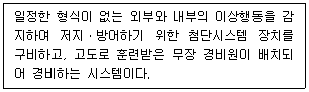
- 최저수준 경비(Level-1)
- 하위수준 경비(Level-2)
- 중간수준 경비(Level-3)
- 상위수준 경비(Level-4)
(정답률: 20%)
67. 외곽경비에 관한 설명으로 옳지 않은 것은?
- 시설물의 경계지역은 시설물 자체의 특성과 위치에 의해 결정된다.
- 담장을 설치할 경우 가시지대를 넓히기 위해 주변 장애물을 제거해야 한다.
- 경계구역 내 옥상이 없는 건물이나 외곽지역도 경비활동의 대상으로 고려되어야 한다.
- 경비조명은 시설물에 대한 감시활동보다는 미적인 효과가 더 중요하다.
(정답률: 37%)
68. 국가중요시설 경비에 관한 설명으로 옳지 않은 것은?
- 국가중요시설 중요도에 따라 가급, 나급, 다급, 라급, 마급으로 분류된다.
- 국가중요시설 내 보호지역은 제한지역, 제한구역, 통제구역으로 구분된다.
- 국가중요시설은 국방부장관이 관계 행정기관의 장 및 국가정보원장과 협의하여 지정한다.
- 국가중요시설 경비의 효율화를 위해서는 교육훈련 강화를 통한 경비 전문화가 필요하다.
(정답률: 28%)
69. 순찰경비에 관한 설명으로 옳지 않은 것은?
- 복수순찰은 단독순찰에 비해 인원의 경제적 배치가 가능하고 여러 지역을 분산하여 순찰할 수 있다.
- 난선순찰은 경비원의 판단에 따라 경로를 선택하는 순찰이다.
- 자동차순찰은 넓은 지역을 신속하게 순찰할 수 있다.
- 실내순찰은 순찰경로가 경비 대상시설의 내부로 한정되는 순찰이다.
(정답률: 14%)
70. 비상사태 발생시 민간경비의 대응으로 옳은 것을 모두 고른 것은?
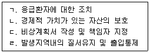
- ㄱ, ㄴ, ㄷ
- ㄱ, ㄴ, ㄹ
- ㄱ, ㄷ, ㄹ
- ㄴ, ㄷ, ㄹ
(정답률: 24%)
71. 국가보안시설 및 기업의 산업스파이 문제에 관한 설명으로 옳지 않은 것은?
- 핵심정보에 접근하는 자는 비밀보장각서 등을 작성하고, 비밀인가자의 범위를 최소한으로 제한해야 한다.
- 최근 기업규모별 산업기술 유출 건수는 대기업보다 중소기업에서 더 많이 발생하고 있어 체계적인 보안대책이 요구된다.
- 산업스파이는 외부인이 시설의 전산망에 침입하여 핵심정보를 절취해 가는 경우가 많아 방어시스템을 구축해야 한다.
- 첨단 전자장비의 발전으로 산업스파이에 의한 산업기밀이 유출될 수 있는 위험요소들이 더욱 많아지고 있다.
(정답률: 23%)
72. 다음의 사례에 해당하는 신종금융범죄는?
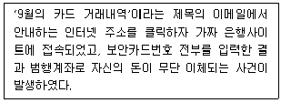
- 피싱(Phishing)
- 파밍(Pharming)
- 스미싱(Smishing)
- 메모리해킹(Memory Hacking)
(정답률: 18%)
73. 물리적 통제시스템인 CCTV에 관한 설명으로 옳은 것은?
- 영상정보를 불특정 다수에게 전달함으로써 범죄발생시 신속한 대응이 가능하다.
- 영상정보처리기기의 무분별한 설치는 인권침해 가능성이 높아 개인정보보호법에서 엄격하게 규제하고 있다.
- 국가중요시설에 영상정보처리기기를 설치ㆍ운영하려는 자는 관련 안내판을 설치하여 정보주체가 쉽게 알아볼 수 있도록 해야 한다.
- 디지털(DVR) 방식에서 아날로그(VCR) 방식으로 전환되어 그 효율성이 증대되었다.
(정답률: 5%)
74. 정보보호의 목표 중 다음 설명에 해당하는 것은?
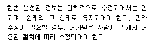
- 비밀성
- 가용성
- 영리성
- 무결성
(정답률: 24%)
75. 컴퓨터보안 관련 위해요소와 그 내용의 연결로 옳지 않은 것은?
- 트로이목마(Trojan horse): 실제로는 파일삭제 등 악의적인 목적을 가지고 있지만, 좋은 것처럼 가장하는 프로그램
- 서비스거부 공격(Denial of service attack): 악의적으로 특정시스템의 서버에 수많은 접속을 시도하여 다른 이용자가 정상적으로 이를 사용하지 못하도록 하는 수법
- 자료의 부정변개(Data diddling): 금융기관의 컴퓨터시스템에서 이자계산이나 배당금 분배시 단수 이하의 적은 금액을 특정계좌로 모으는 수법
- 바이러스(Virus): 컴퓨터프로그램이나 실행 가능한 부분을 복제ㆍ변형시킴으로써 시스템에 장애를 주는 프로그램
(정답률: 24%)
76. 컴퓨터시스템의 보안 및 컴퓨터범죄에 관한 설명으로 옳지 않은 것은?
- 컴퓨터범죄는 다른 범죄에 비해 증거인멸이 용이하며, 고의 입증이 어렵다.
- 컴퓨터보안을 위한 체계적 암호관리는 숫자ㆍ특수문자 등을 사용하고, 최소암호수명을 설정하여 주기적으로 관리해야 한다.
- 타인의 컴퓨터에 있는 전자기록 등을 불법으로 조작하면, 형법상의 전자기록위작ㆍ변작죄 등이 적용될 수 있다.
- 시설 내 중앙컴퓨터실은 화재발생시 그 피해가 심각하기 때문에 스프링클러(sprinkler) 등 화재대응시스템을 구축해야 한다.
(정답률: 15%)
77. 민간경비원의 동기부여이론에 관한 설명으로 옳지 않은 것은?
- 허즈버그(F. Herzberg)의 동기-위생이론 중 동기요인은 조직 정책, 감독, 급여, 근무환경 등과 관련된다.
- 인간관계론적 관점에서 등장한 동기부여이론은 조직내 구조적인 면보다는 인간적 요인을 중요시한다.
- 매슬로우(A. Maslow)의 욕구계층이론 중 안전욕구는 2단계 욕구에 해당한다.
- 맥그리거(D. McGregor)의 XㆍY이론 중 Y이론은 인간 잠재력의 능동적 발휘와 관련된다.
(정답률: 5%)
78. 다음 설명에 해당하는 경비개념은?
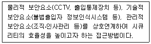
- 혼성(Hybrid) 시큐리티
- 종합(Total) 시큐리티
- 융합(Convergence) 시큐리티
- 도시(Town) 시큐리티
(정답률: 29%)
79. 민간경비의 공공관계(PR) 개선에 관한 설명으로 옳지 않은 것은?
- 공공관계 개선은 관련정책 및 프로그램을 통한 민간경비의 이미지 향상을 의미한다.
- 민간경비는 특정고객에게 경비 서비스를 제공하지만 일반시민과의 관계 개선도 중요하다.
- 민간경비의 언론관계는 기밀유지 등을 위해 무반응적(inactive) 대응이 원칙이다.
- 민간경비는 장애인ㆍ알콜중독자 등 특별한 상황에 처한 사람들의 특성을 잘 이해하고 있어야 한다.
(정답률: 23%)
80. 경찰과 민간경비의 관계개선을 위해서는 향후 경찰조직 내의 전담부서의 확대가 요구된다. 현재 경찰청에서 경비업법상 경비업을 관리하고 있는 부서는?
- 생활안전국 범죄예방정책과
- 생활안전국 생활질서과
- 경비국 경비과
- 경비국 위기관리센터
(정답률: 10%)